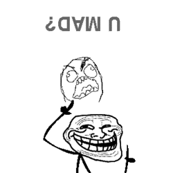

3
2
1
Like #hashes
Stage I: #mothereffingentertainish
Stage II: #awesomchestral
Stage III: #uebertalk
Troll #hashes
Stage I: #trollish
Stage II: #icandobetterdude
Stage III: #whatswrongwiththatguyonstage